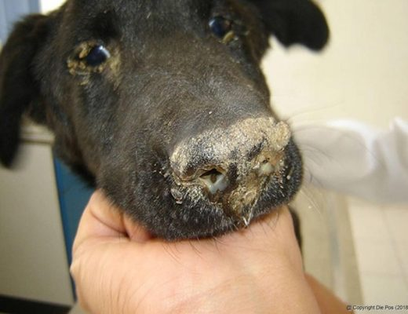

1. BỆNH CARÊ ( SÀI SỐT - DISTEMPER )
Triệu Chứng
Hầu hết chó mắc bệnh ở thể cấp tính với các triệu chứng điển hình: sốt cao từ 39- 42 độ C, các niêm mạc đều bị viêm, mắt chó bị sưng húp, chảy nước mắt và có ghèn liên tục.
- Chó thở khó khăn, khò khè và rên rỉ do viêm phổi cấp có mủ.
- Chó bị viêm niêm mạc đường tiêu hoá, thể hiện nôn mửa liên tục, tiêu chảy có máu và niêm mạc nhầy. Hội chứng viêm ruột làm cho chó kiệt sức và chết nhanh vì mất nước, mất máu, chất điện giải.
- Hội chứng thần kinh cũng thấy xảy ra phổ biến ở chó bệnh như run rẩy, đi lại xiêu vẹo, lên cơn co giật, mắt trợn ngược, chảy nước dãi. Trên mặt, da bụng, bẹn, nách của chó thường có những nốt mụn mủ như hạt đậu vỡ ra và khô đóng vẩy.
- Bệnh phổ biến và gây chết chó con từ 2 - 6 tháng tuổi. Chó trưởng thành trên một năm tuổi ít thấy mắc bệnh.
Một số chó sau khi điều trị khỏi bệnh thường có di chứng thần kinh như : đi choải chân, run rẩy khi đi lại...

Phòng Bệnh
- Tiêm phòng cho chó lúc 3 tháng tuổi bằng vaccine phòng bệnh Carê (VN) hoặc dùng vaccin DHPPi + L (Hà lan): phòng cùng lúc 5 bệnh Carê, Viêm gan truyền nhiễm, Parvovirus, Phó cúm, Lepto .
- Thực hiện vệ sinh thú y và chăm sóc, nuôi dưỡng tốt giúp chó có sức đề kháng chống lại bệnh.
- Chuồng trại và môi trường thả chó phải làm vệ sinh định kỳ, hạn chế môi giới truyền bệnh và chống ô nhiễm.
Điều Trị
- Bệnh chưa có thuốc điều trị đặc hiệu, khi chó bệnh thì phải cách ly để tránh lây nhiễm sang chó khỏe khác và đưa chó đến các phòng mạch Thú y để được hướng dẫn điều trị.
- Có thể sử dụng một trong các loại thuốc kháng sinh trị nhiễm khuẩn kế phát như:Vime-Tobra, Amoxi 15 % LA, Vimexyson C.O.D, Spectylo, Lincocin 10%.... Kết hợp với các thuốc bồi dưỡng, trợ sức sau: vitamin C, B. complex fortified , Paravet, Atropin, Na.campho,...
Do chó bị tiêu chảy nhiều, nên truyền dịch Glucose 5% bù đắp nước và chất điện giải để chó mau hồi phục.
2. BỆNH HO CŨI CHÓ (VIÊN KHÍ QUẢN PHẾ QUẢN TRUYỀN NHIỄM)
- Bệnh gây ra nhiều nhất ở chó dưới 6 tháng tuổi, chó nhập từ nước ngoài, chó chuyển vùng vào đợt đợt rét lạnh, ẩm ướt hoặc chó bị nhiều stress bất lợi khác... đều có khả năng mang bệnh
- Bệnh lây lan nhanh làm chết nhiều chó với các triệu chứng ho khạc kéo dài từ 7- 21 ngày do viêm đường hô hấp trên, mặc dù lúc đầu vẫn ăn khỏe, nhanh nhẹn, không sốt, khó có thể biết chó đã mang bệnh.
- Quan sát kỹ: mắt không trong sáng, có rử ghèn, gương mũi luôn luôn khô, ráp và chảy dịch xanh, hay liếm mũi rồi nuốt dịch, hắt hơi khi có nhiều dịch chảy ra...bệnh chuyển sang mạn tính, chó gầy sút nhanh do kế phát các bệnh vi khuẩn, virus khác: Parvovirus, Carre... tiêu chảy, phân nát có nhày máu, hôi tanh , nôn ra dịch nhớt vàng từ dạ dày lẫn nhớt, rối loạn chức năng gan, thận và chết đột ngột do khó thở, trụy hô hấp, mất nước và trụy tim mạch.
- Bệnh thường diễn biến kéo dài tới nhiều tuần, thậm chí tới 2 tháng. Những con được chữa trị theo triệu chứng, tưởng chừng đã khỏi, sau vài tuần bị lại, tỷ lệ tử vong rất cao.
- Cách phòng tốt nhất: Tiêm vắc xin.
3. BỆNH VIÊM DẠ DÀY – RUỘT TRÊN CHÓ VÀ CÁCH CHỮA.
Nguyên Nhân
Bệnh phổ biến xảy ra quanh năm thường thấy nhiều vào mùa hè khi thời tiết nóng và mưa ẩm ướt. Có 3 nguyên nhân có thể gây ra viêm dạ dày và ruột cấp ở chó.
- Do giun móc (Ancylostoma caninum) : giun móc có những móc nhọn bằng kitin cắm vào vách ruột non ở phần tá tràng, không tràng để hút máu, tạo ra những tổn thương và xuất huyết trong tổ chức niêm mạc ruột. Vi khuẩn có sẵn trong niêm mạc ruột sẽ xâm nhập vào những chỗ bị tổn thương gây thành bệnh viêm ruột cấp.
- Do virus: Virus Parvo, Virus Carê khi xâm nhập vào hệ thống tiêu hóa của chó phát triển nhanh chóng, phá hoại niêm mạc dạ dày và ruột.
- Do vi khuẩn : Chó ăn uống phải thức ăn và nước uống có chứa vi khuẩn thương hàn (Salmonella), vi khuẩn yếm khí (Clostridium), vi khuẩn E.Coli... Những vi khuẩn này sẽ phát triển trong niêm mạc đường tiêu hóa gây ra bệnh viêm dạ dày và ruột cấp.
Triệu Chứng
- Vài ngày đầu chó ít ăn hoặc bỏ ăn, sốt 39,5 - 40oC, có kèm theo các cơn run rẩy. Sau đó, chó nôn mửa liên tục đồng thời tiêu chảy nặng, phân lúc đầu táo bón sau loãng có màu xám vàng, có lẫn niêm mạc dạ dày và ruột lầy nhầy, có mùi rất tanh.
- Do nôn mửa và tiêu chảy liên tục, chó mất nước thể hiệûn: mắt trũng, bụng thót, da nhăn nheo. Khi bị mất nước chó không được điều trị kịp thời sẽ chết sau một vài ngày.
- Thời kỳ cuối của bệnh, chó thường chảy máu ruột nên phân có màu nâu sẫm hoặc lờ đờ như máu cá. Trước khi chết thân nhiệt chó thường hạ thấp . Thời kỳ này chó không đi được, kiệt sức, nằm một chỗ và chết.
- Bệnh viêm dạ dày và ruột cấp nếu không chữa trị kịp thời, chăm sóc chu đáo thì chó sẽ chết 90 - 100% trong thời gian 2 - 4 ngày. Một số chó qua khỏi nhưng chuyển thành thể viêm dạ dày ruột mãn tính. Thể bệnh này làm chó bị gầy còm, thiếu máu do kém ăn, lúc thì táo bón, lúc thì tiêu chảy.
Phòng Bệnh
- Cho chó ăn thức ăn nấu chín, không cho ăn thịt sống và trứng sống, vì trong thịt sống và trứng sống dễ bị nhiễm các loại vi khuẩn gây bệnh đường tiêu hóa như: vi khuẩn thương hàn, trực khuẩn yếm khí, trực khuẩn E.Coli. Không cho chó ăn thức ăn ôi thối, cho uống nước sạch không nhiễm bẩn.
- Thực hiện tẩy giun sán định kỳ cho chó bằng Vimectin cứ 3- 4 tháng tẩy 1 lần để tránh gây tác hại cơ giới dẫn đến viêm ruột cấp.- Định kỳ tiêm phòng vaccine chống bệnh Carê và Parvovirus.
Điều Trị
Nguyên tắc chung là chẩn đoán đúng nguyên nhân gây bệnh từ đó điều trị nguyên nhân kết hợp với điều trị triệu chứng, trợ sức và trợ tim mạch.
Điều trị bằng một trong các loại kháng sinh sau:Spectylo : liều 1ml/ 3 - 5 kg thể trọng.Tylenro 5 + 5 : liều 1ml/10kg thể trọng/ngày.
Kết hợp với điều trị triệu chứng và bồi dưỡng bằng các loại như :
- Vime C : liều 500mg/con/ngày.
- Vitamin B6 : liều 1ml/con/ngày.
- Vitaral : liều 1ml/10kg
- PParavet : liều 1ml/4 kg
- P.Atropin : liều 2ml/10 -15 kg
- PNa.campho : liều 2 - 4 ml/con/ngày.
- Truyền glucose 5% để cung cấp nước và chất điện giải giúp chó mau hồi phục.
4. BỆNH GHẺ DEMODEX
Triệu Chứng
Ghẻ Demodex được phân loại thành 2 dạng: khu trú hoặc toàn thân dựa vào đánh giá tình trạng bệnh và cách xử lí đối với từng loại.
Ghẻ Demodex đôi khi không gây ngứa, tuy nhiên bệnh ghẻ toàn thân và ở bàn chân có thể gây đau đớn dữ dội. Vùng rụng lông có thể bị đóng vảy và đỏ lên
Ghẻ Demodex khu trú thường có vùng tổn thương nhỏ và riêng biệt, ghẻ Demodex toàn thân có những vùng tổn thương lớn hơn và có nhiễm khuẩn thứ phát.
Ghẻ Demodex khu trú được đặc trưng bởi vùng rụng lông ít (ít hơn 5 – 12 điểm), nhỏ, vùng tổn thương có giới hạn và thường xảy ra trên chó con. Việc điều trị dễ dàng đạt hiệu quả cao.
Ghẻ Demodex toàn thân là dạng bệnh trầm trọng, gây ra tình trạng thú bị rụng lông toàn thân, da đóng vảy và tiết dịch, biểu hiện lờ đờ, sốt và nhiễm trùng huyết do nhiễm khuẩn thứ phát. Mụn, mụn mủ, đỏ da, tăng sắc tố mô là tổn thương kế phát của bệnh ghẻ Demodex toàn thân. Ghẻ Demodex toàn thân có thể xảy ra ở thú non hoặc thú trưởng thành. Thú trưởng thành thường ít bị mắc bệnh hơn nhưng khi mắc bệnh thì việc điều trị rất khó khăn. Để điều trị đạt hiệu quả cần kết hợp điều trị kí sinh trùng, nhiễm khuẩn kế phát và các nguyên nhân tiềm ẩn khác, đồng thời sử dụng các loại thuốc hỗ trợ tăng sức đề kháng.
Chuẩn Đoán
Tất cả thú có triệu chứng ngứa, viêm da sâu, mụn, mụn mủ, đóng vảy nên được xem xét là ghẻ Demodex. Nếu nghi ngờ, nên nhổ lông vùng da bệnh (ghẻ Demodex canis sống trong nang lông) hoặc cạo da sâu vùng da bị bệnh.Để vật phẩm (lông được nhổ/ da cạo sâu) lên phiến kính, cho vài giọt paraffin phủ lên trên và xem dưới độ phân giải thấp. Tăng độ phân giải ở khu vực kiểm tra để xem được chi tiết hơn. Ghẻ vẫn sống 1 khoảng thời gian trong dung dịch paraffin lỏng, do đó có thể thấy được sự di chuyển của cái ghẻ.Cái ghẻ nhỏ, dài và thường có dạng giống như điếu xì gà với các chân ngắn đặc trưng ở mặt sau của ghẻ. Bốn cặp chân được định vị ở nửa phần thân trước của cái ghẻ và lỗ sinh dục của con cái ở phía sau của cặp chân cuối.
Demodex canis
Cái ghẻ sinh sống bình thường ở da chó/ mèo, phát hiện được 1 con cái ghẻ thì đó không phải là triệu chứng, phải tìm được số lượng ghẻ nhiều, có thể phát hiện cả trứng mới là dấu hiệu.Cạo lông và ép da... ... cho đến khi đẩy được cái ghẻ khỏi phần sâu của nang lông.
Vòng đời
Toàn bộ vòng đời của cái ghẻ xảy ra trên kí chủ, truyền từ mẹ cho con trong vài ngày đầu đời khi thú non bú sữa. Ấu trùng nở ra từ trứng và phát triển thành con đực, con cái sau 2 – 3 giai đoạn phát triển, toàn bộ vòng đời của ghẻ xảy ra mất khoảng 3 tuần.
Kiểm soát bệnh ghẻ do Demodex toàn thân:
Bệnh có thể liên quan đến các nguyên nhân tiềm ẩn, tất cả thú bị ghẻ do Demodex toàn thân nên được điều trị kết hợp với kháng sinh để ngăn ngừa phụ nhiễm và giúp hồi phục nhanh. Tiến trình điều trị tùy thuộc vào mức độ trầm trọng của bệnh và kết quả đánh giá tế bào học.
Nếu kiểm tra tế bào học có cầu khuẩn và chủ yếu là Staphylococcus intermedius nên điều trị bằng kháng sinh từ 3 – 8 tuần.
Nếu kiểm tra tế bào có số lượng lớn là trực khuẩn, nên làm kháng sinh đồ để chọn ra kháng sinh có hiệu quả cao nhất. Kháng sinh được lựa chọn để điều trị viêm da có mủ phải là loại đạt hàm lượng cao trên da và khả năng diệt khuẩn tối ưu nhất. Điều quan trọng là phù hợp với độ dài của điều trị, giải quyết được các tổn thương của viêm da mủ.
Tiến hành điều trị và theo dõi
Tiến trình điều trị tùy vào từng cá thể. Kiểm tra ghẻ Demodex trên chó mỗi tháng. Mỗi lần cạo da phải đếm số ghẻ, nhộng, ấu trùng và trứng để kiểm tra dưới kính hiển vi với độ phân giải 40 hoặc 100.
- Nếu số lượng ghẻ và tình trạng lâm sàng không thay đổi, nên thay đổi liệu pháp điều trị.
- Nếu không phát hiện giai đoạn thành thục đầu tiên và sau đó số lượng ghẻ trưởng thành giảm, thì tiếp tục với liệu pháp điều trị đã chọn. Nên tiếp tục điều trị thêm 4 tuần sau khi kiểm tra mẫu da cho kết quả âm tính lần thứ 2. Thông thường, người nuôi thú đều mong muốn cải thiện tình trạng sau tháng đầu điều trị. Nhưng việc kiểm tra mẫu da cho kết quả âm tính chỉ đạt được sau điều trị 2 – 4 tháng. Do đó, một quy trình điều trị Demodex trung bình mất khoảng 4 – 6 tháng. Với những trường hợp điều trị không hiệu quả, thay đổi thuốc là điều hiển nhiên và tỉ lệ thành công của thuốc thứ 2 thường đạt khoảng 70%. Cơ hội tương tự của việc điều trị sau khi tái phát cũng khoảng 70%.
5. BỆNH ĐI ỈA RA MÁU, NÔN MỬA CHÓ CON
Triệu Chứng
Chó đang khỏe mạnh bỗng bỏ ăn, ủ rũ, nôn mửa, hai ngày sau đi ỉa, ngày sau nữa ỉa ra máu tươi như nước chỉ uống nước, người gầy rộc và chết nhanh.
Điều trị hiệu quả
- Thuốc: Atropin+ gentamycin+ lincomycin+ VB1+VB12 (THUỐC ỐNG TIÊM CỦA NGƯỜI) tùy thuộc trọng lượng của chó ta tiêm ngày 2 lần các thuốc kết hợp với nhau)
- Tiêm chưa thể chữa khỏi hẵn cho chó được vì chó ỉa ra máu hoại tử ruột rồi nên quan trọng hơn cả bạn cho ngay quả trứng gà bơm vào miệng chó(không ăn phải bắt ăn) ngày 1-2 quả
Quan trọng nữa là lấy ngay 1 nắm to cây nhọ lồi cầm máu+ nắm cây mơ lông rửa sạch ,vẩy sạch nước dã lấy nước cốt đặc đổ cho chó uống ngày 2-3 lần tùy theo( trên thành phố khó tìm cây này nên có thể tiêm Vitamin K) nhưng hiệu quả phải kết hợp với ăn trứng gà và uống cây lọ nhồi+ mơ lông hoặc vitamin k chỉ trong 3-4 ngày chó khỏi hẳn các triệu chứng trên và ăn được, thường khi chó khỏi đa phần chó gầy còn bộ khung sương nhưng hồi phục rất nhanhh.